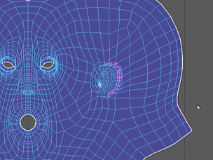
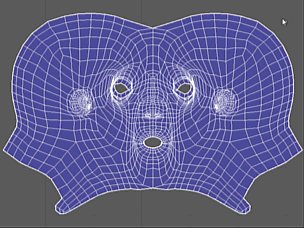
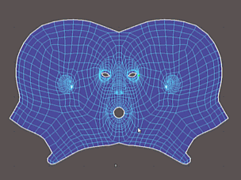
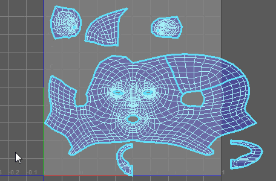

“抓取工具”(Grab Tool)、“收缩工具”(Pinch Tool)、“涂抹工具”(Smear Tool)和“对称工具”(Symmetrize Tool)。
通过在 UV 上拖动来改变它们
| 工具 | 效果 | 示例 |
|---|---|---|
| 在与鼠标拖动方向相同的方向上拉动 UV。
其作用类似于“涂抹 UV 工具”(Smudge UV Tool)。 |

|
|
| 将 UV 拉向彼此。 |

|
|
| 按与笔划方向的原始位置相切的方向移动 UV。 |

|
|
| 对称 UV 工具 | 跨所选轴将 UV 移动到与对应 UV 相对的位置。 |

|